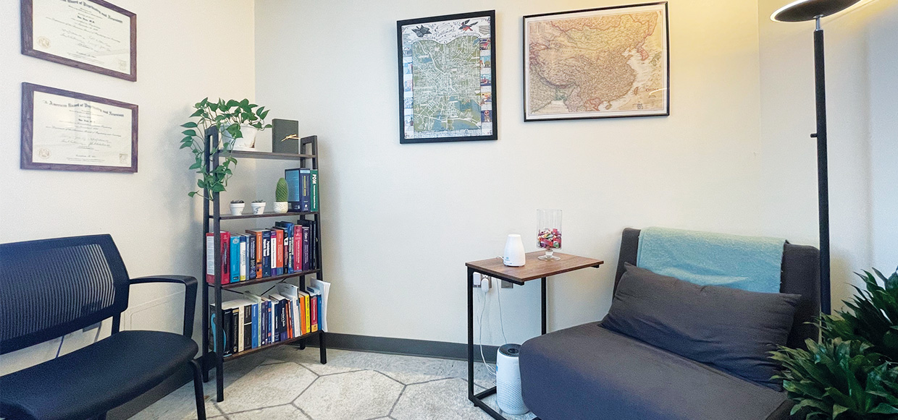

<html lang="en"></html>
  <head>
    <meta charset="utf-8">
    <link href='https://fonts.googleapis.com/css?family=Poppins' rel='stylesheet'>
    <link rel="stylesheet" href="./index.css">
    <script src="./index.js"></script>
  </head>

  <body id="services-body">
    <div id="non-footer">
      <!-- navigation bar -->
      <nav>
        <div class="leftside-navbar">
          
          <div class="description">
            <p id="name">IAN HSU, MD</p>
            <p id="title">Psychiatrist & Psychotherapist</p>
          </div>
        </div>
        <a href="./" id="item1">HOME</a>
        <a href="./about.html" id="item2">ABOUT ME</a>
        <a href="./services.html" id="item3">SERVICES & PAYMENT</a>
        <a href="./contact.html" id="item4">BOOK APPOINTMENT</a>
      </nav>

    <!-- main content -->
    <main id="services">
      <div id="services-title">
        <h1>SERVICES & PAYMENT</h1>
        
      </div>
      <div id="services-information">
        <div id="treatment-information">
          <h2>GETTING STARTED WITH TREATMENT</h2>
          <p id="services-paragraph">Please complete <a href="./contact.html"><mark>this form</mark></a> to schedule a free, 10-minute conversation to discuss whether my practice would meet your needs.
          <br><br>
          We will then schedule a 90-minute initial appointment during which I learn in detail about your current concerns as well as your past.
          By the end of our first meeting, I will share initial thoughts about how I might help you, and we will decide together on next steps.
          Subsequent appointments are typically 50 minutes long; over the course of these sessions is where the growth, healing, and change take place.
          <br><br>
          For the time being, all appointments are conducted via tele-health.
          </p>
        </div>
        <div id="insurance-information">
          <h2>INSURANCE & PAYMENT</h2>
          <p>I am considered an “out-of-network” provider with insurance plans.
            My patients receive receipts with which they can submit for reimbursement, if that is offered by their insurance plan.
            Payment is due at the time of service.</p>
        </div>
      </div>
    </main>
    </div>
  </body>
  <footer>
    <a href="./">Home</a>
    <div class="circle"></div>
    <a href="./about.html">About Me</a>
    <div class="circle"></div>
    <a href="./services.html">Services & Payment</a>
    <div class="circle"></div>
    <a href="./contact.html">Book Appointment</a>
  </footer>
</html>